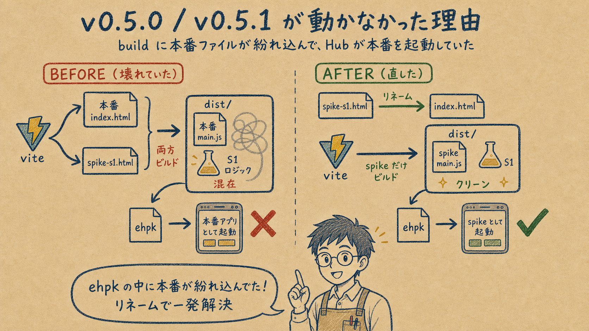
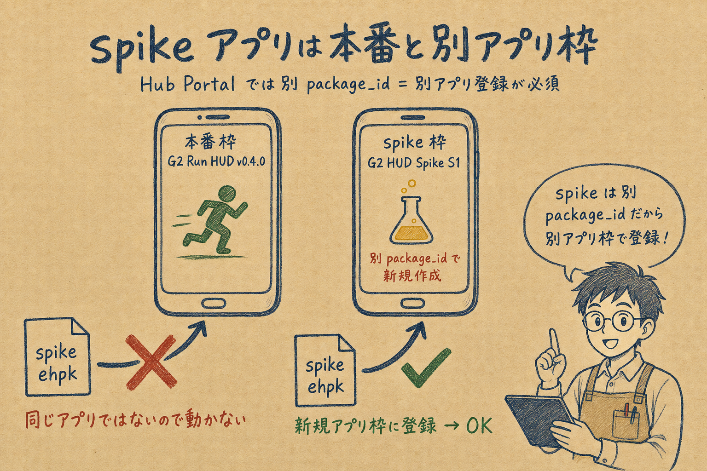
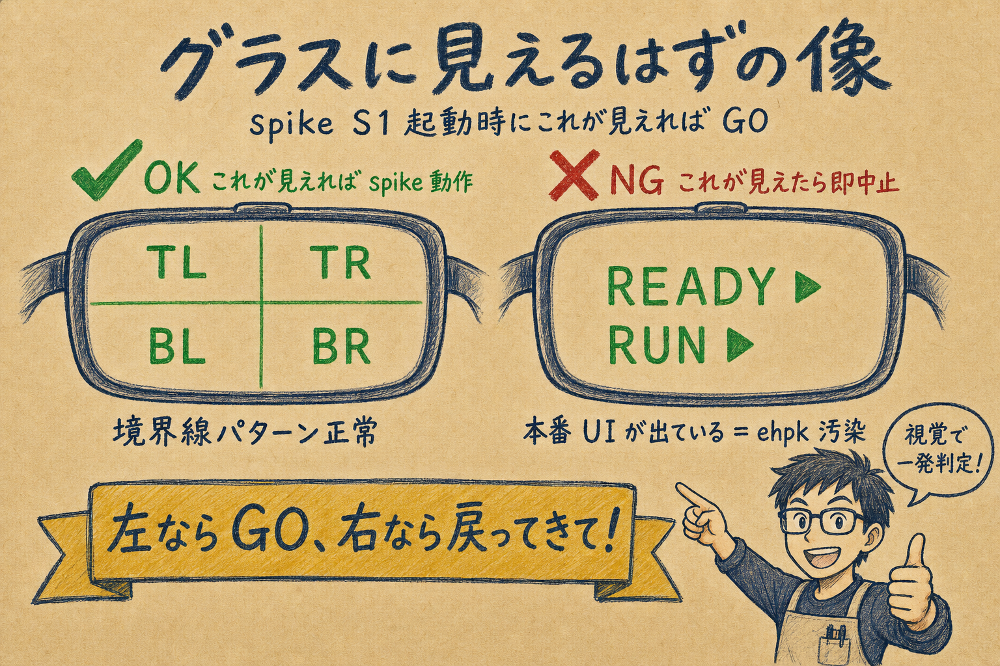
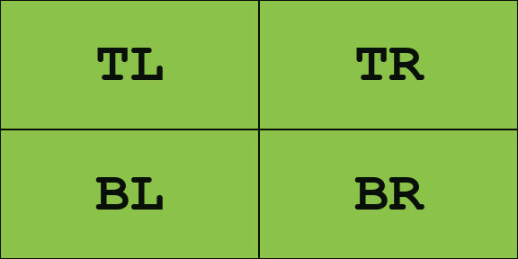
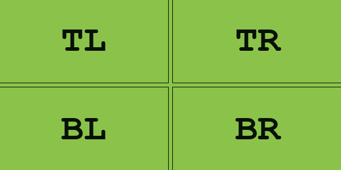
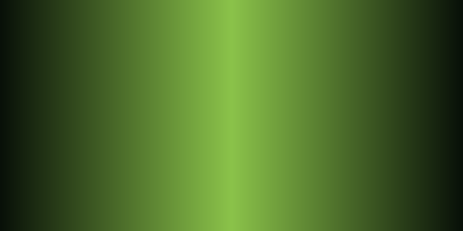
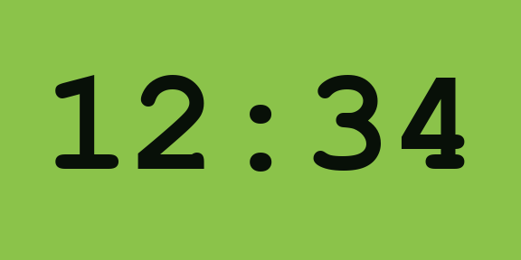
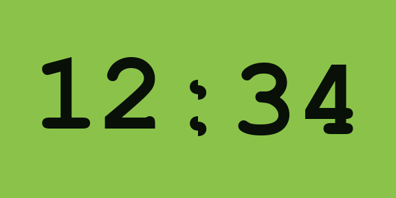
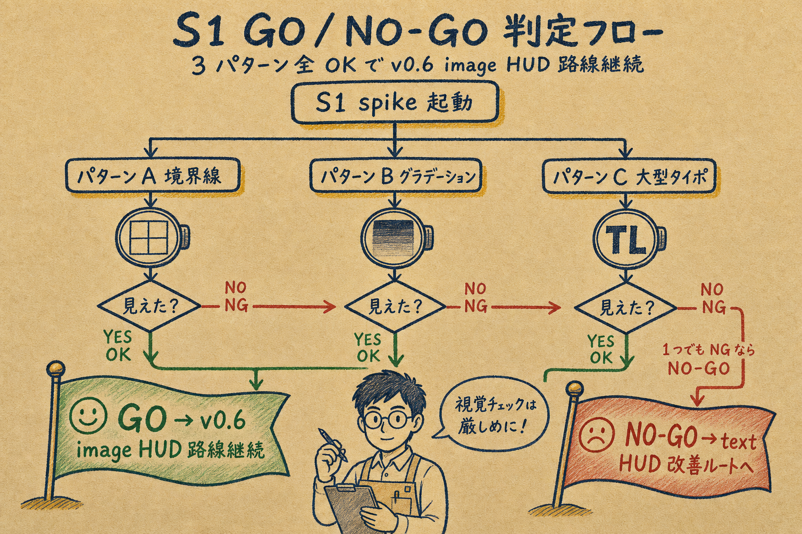
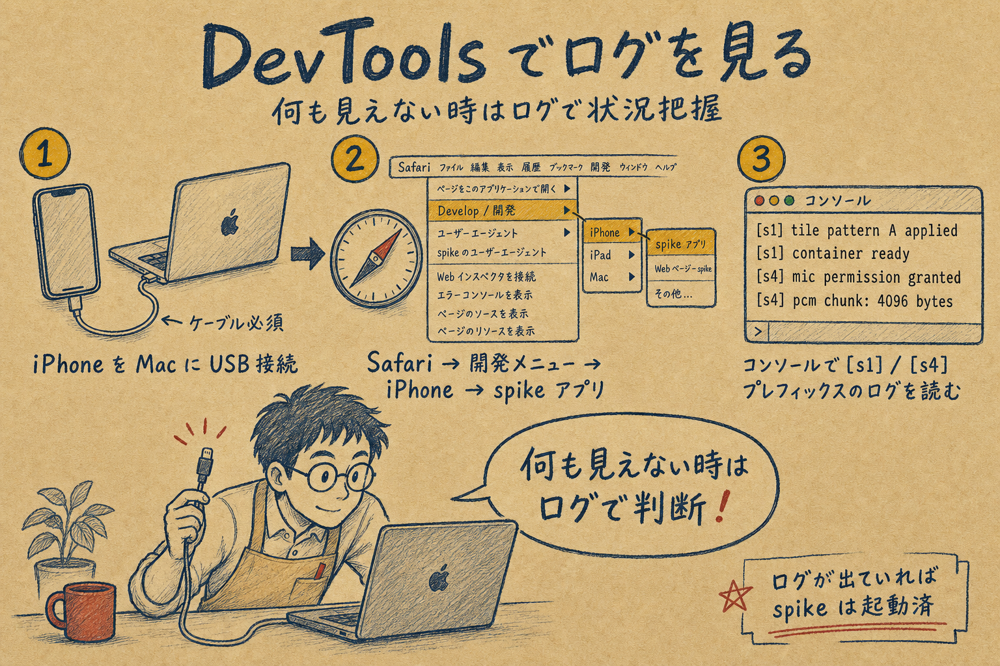

v0.5.2 / v0.5.3) で再アップロードしてください。手順詳細は本ページの通りに進めれば確実に動きます。
v0.5-spike S1 / S4 の clean build 済 ehpk を Hub Portal にアップロードして実機で GO/NO-GO 判定する手順です。
本ページに書いてある通りに進めれば確実に進められるよう、要所に説明イラスト + 期待画面 + 失敗時のトラブルシューティングを配置しています。
配置場所: spike-builds/ 配下（git ignored）
| 項目 | S1 (0.5.2) | S4 (0.5.3) |
|---|---|---|
dist/index.html のみ存在 | ✅ | ✅ |
main-*.js 不在 (本番 entry 混入なし) | ✅ | ✅ |
main-*.css 不在 | ✅ | ✅ |
| spike タイトルが index.html 内に存在 | ✅ | ✅ |
| spike bundle ロジック (buildPatternA / audioControl) が含まれる | ✅ | ✅ |
| 本番 UI 文言 (metric-distance / history-list 等) の混入なし | ✅ | ✅ |
g2-run-hud-spike-s1-0.5.0.ehpk ─ build バグで本番 UI が起動するg2-run-hud-spike-s4-0.5.1.ehpk ─ 同上既に spike-builds/ から削除済み。誤って手元の別場所に保存している場合は破棄してください。

spike worktree の vite.config.ts で 本番 entry と spike entry を両方ビルドする設定になっており、dist/ に本番の index.html + main-*.js (本番 UI bundle) が混入していました。app.json で entrypoint: spike-sN.html を指定しても、Hub OS は dist/index.html を優先起動する仕様のため、本番 UI が表示される結果に。
これは秘書 (Claude) が dispatch packet で「本番 index.html を温存」と発注した 秘書側の設計バグです。dev-engineer の実装過失ではありません。
index.html を削除spike-sN.html を index.html にリネーム（spike が唯一の entry に）vite.config.ts を最小化（input 指定削除 → vite はデフォルトで index.html だけビルド）rm -rf dist → clean build → 検査ゲート 6 項目 PASS → pack結果: ehpk サイズが 46-47 KB → 33 KB に縮小（本番 bundle 除去の証拠）。

com.spwebcreat.g2runhud とは 別 package_id（別アプリ枠）です。前回 S1 (0.5.0) を新規アプリとして登録済なので、今回は その既存 spike アプリ枠の version 更新として上げてください（新規アプリ作成は不要）。
com.spwebcreat.g2runhud.spike.s1）g2-run-hud-spike-s1-0.5.2.ehpk をドロップ0.5.2 として認識されることを確認 → 公開manifest package_id does not match the app package_id エラーになります）。
com.spwebcreat.g2runhud.spike.s4 を指定G2 Spike S4 Micg2-run-hud-spike-s4-0.5.3.ehpk をドロップ → version 0.5.3 確認 → 公開com.spwebcreat.g2runhud / v0.4.0) 枠には絶対にドロップしないでくださいmanifest package_id does not match the app package_id エラーで弾きますが、念のため。

| 場所 | 期待画面 | 本番 (NG) と区別する目印 |
|---|---|---|
| iPhone Hub アプリ画面 | タイトル G2 Run HUD Spike S1 (Tiles) |
本番 = G2 Run HUD + 計測データ UI（距離 / ペース / RUN/WALK ボタン等） |
| グラス右目ディスプレイ | 576×288 全面に 2×2 タイル像（5 秒ごとに A → B → C 切替） | 本番 = READY / RUN 等のテキスト表示 |
G2 Run HUD ではないことをタイトル確認）| パターン | 視覚チェック |
|---|---|
| A 境界線 | 各タイル外周 1px 黒枠が 連続した 576×288 外周枠 に見えるか／中央の TL/TR/BL/BR 文字が正しい位置 |
| B グラデーション | 中央付近の段差・色ジャンプ・タイル境界の不連続が 無い |
| C 大型タイポ | 境界をまたぐ 12:34 が 1 文字として読める／字の上下/左右で段差なし |
実機 G2 (4-bit gray / 576×288 / 緑系発光) の見え方を Python で再現したサンプル。
実機で OK 側に近ければ GO、NG 側に近ければ NO-GO。




12:34 が 1 文字として連続 して読める。

| 場所 | 期待画面 |
|---|---|
| iPhone Hub アプリ画面 | タイトル G2 Run HUD Spike S4 (Mic) / permission ダイアログ g2-microphone |
| グラス右目ディスプレイ | MIC NNN B/s NNN ms ago | n=NN t=NNs 等のテキスト継続表示 |
g2-run-hud-spike-s4-0.5.3.ehpk をアップロード（既存枠 or 新規アプリ作成）g2-microphone を 「許可」[s4] spike S4 starting
[s4] waiting for EvenAppBridge ...
[s4] bridge ready / attaching containers ...
[s4] attached / requesting audioControl(true)
[s4] audioControl(true)=true latencyMs=87
[s4] audioEvent #1 bytes=3200 elapsedFromStart=412ms
[s4] audioEvent #2 bytes=3200 elapsedFromStart=515ms
[s4] ... (継続)
[s4] summary @ 5min totalEvents=2987 avgBps=31840 p95Interval=108ms| メトリクス | GO 値 | 結果欄 |
|---|---|---|
audioControl(true)=true | true | ☐ |
audioControlOnLatencyMs | < 200ms | ☐ |
firstEventLatencyMs | < 1000ms | ☐ |
events (totalEvents) | > 0 | ☐ |
avgBps | ≈ 32,000 ± 10%（16kHz/16-bit/100ms） | ☐ |
bytes/event p50 / p95 | 一定 (3200/3200 想定) | ☐ |
interval p95 | ≤ 500ms | ☐ |
WKPreferences.isInspectable = true を設定していないため（旦那様や秘書では解決不能）。その場合は次節「iPhone STATUS 表示で判定」を使ってください。

[s1] / [s4] ログを見るG2 HUD Spike S1 または G2 Spike S4 Mic）を選択[s1] / [s4] プレフィックスのログを確認iPhone Hub アプリ画面の STATUS 表示で必要数値はほぼ全て見えます。S4 を例に判定方法:
STATUS: MIC 35200 B/s 38ms ago | n=198 t=20s
↑avgBps ↑直近 ↑events ↑経過秒| STATUS 項目 | 計算 / GO 基準 |
|---|---|
NNN B/s | avgBps が 32,000 ± 10% (28.8K-35.2K) なら ✅ |
n=NN | events 数。5 分 (300s) で n≈3000 なら理論値通り ✅ |
t=NNs | 経過秒。done (timeout) で 5 分完走確認 |
NN ms ago | 直近 event からの経過。< 500ms なら stream 安定 ✅ |
| 派生: events/sec | n ÷ t ≈ 10/s が理論値 (100ms 間隔) |
| 派生: bytes/event | (B/s) ÷ (events/s) ≈ 3,200 が理論値 |
| 症状 | 原因候補 | 対処 |
|---|---|---|
グラスに本番 UI (READY / RUN) が見える |
(a) iPhone Hub アプリで本番アプリを起動した (b) build 混入バグ再発 |
iPhone Hub アプリのタイトル確認 → spike を選び直し / それでも本番なら秘書に報告 |
| グラスに何も見えない（真っ黒） | (a) bridge 取得 timeout (b) attach 失敗 (c) ペアリング切れ |
DevTools コンソールで [s1] bridge timeout / [s1] attach failed 等のログを確認 → 秘書に共有 |
| パターン切替が起きない（A だけ表示） | (a) render エラー (B/C 描画失敗) (b) PNG エンコード失敗 |
DevTools コンソールで [s1] tile sent ログが 4 タイル × 3 パターン分出ているか確認 |
S4 で audioControl=false |
権限ダイアログを「拒否」した | iPhone 設定 → spike アプリ → マイク許可 → 再起動 |
Hub Portal アップロードが manifest package_id does not match the app package_id エラー |
本番アプリ枠に spike ehpk を入れた | spike 専用枠 (com.spwebcreat.g2runhud.spike.sN) を開いてからアップロード |
| 「アップロードしたのに反映されない」 | Hub Portal cache（同 version 上書き） | version が 0.5.2 / 0.5.3 になっているか確認（旧 0.5.0 / 0.5.1 を上げていないか） |